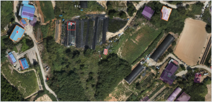

AI·GIS 현황 검토용 · 자동분석 보조자료농지·건축물 현황조사 / A4 기본서식
농지 위 건축물 의심 조사서
영상 기반 중첩 후보의 공부·인허가·현장 확인용 · 법적 판단 아님
01 대상 위치 및 기본정보
| 주소(주 필지) | 전북특별자치도 부안군 변산면 마포리 537-10 | ||
|---|---|---|---|
| PNU(주 필지) | 5280036023105370010 | 지목 / 구분 | 전 / 지목 기준 농지 후보 |
| 위도·경도 | 35.636883, 126.482981 | 평면좌표 | X 153170.66 / Y 337877.84 (5186) |
| 농업진흥지역 | 지정 없음 (원자료 표기) | 탐지 객체 ID | 마포리_153171_337877 |
02 위치도 및 자동탐지 근거
지도·수치: 첨부 조사서 기준
| 사용 영상 | 마포리 |
|---|---|
| 촬영일 / GSD | 미제공 / 미제공 |
| 분석 모델 | yolo11s-seg-buan-6cm-v2-oof |
| 모델 점수 | 0.625 (법적 위반 확률 아님) |
| DSM 높이 | 미제공 |
자동 선별 기준(원문)
농지 위 5㎡·BIR 10% 이상·등록 건물 기록 없음
조회 누락·갱신 지연·미연결 여부를 별도 확인첨부 화면의 위치도 발췌(357 × 172px). 원본 지도·방위·축척은 확인이 필요합니다.
03 필지별 중첩면적 및 비율
지붕 투영 기준 · 단위 ㎡탐지 건축물 면적10.8 ㎡
농지 전체 중첩면적 / BIR10.8 ㎡ / 100.0%
주 필지 밖 중첩면적2.8 ㎡ / 25.9%
| 필지 / 관계 | 지목 | 필지면적 | 건물 중첩면적 | 건물면적 대비 | 해당 필지 점유율(POR) |
|---|---|---|---|---|---|
| 537-10 / 주 필지 | 전 | 901.3 | 8.0 | 74.1% | 0.89% |
| 537-11 / 인접 | 전 | 미제공 | 2.7 | 25.0% | 산정 불가 |
| 537-12 / 인접 | 전 | 미제공 | 0.1 | 0.9% | 산정 불가 |
BIR = 농지 전체 중첩 ÷ 건물면적. POR = 해당 필지 중첩 ÷ 해당 필지면적. 901.3㎡는 원문 POR 분모를 전재했습니다.
해석 주 필지 밖 2.8㎡도 인접 ‘전’ 필지와의 중첩이므로, 농지 전체 10.8㎡와 모순되지 않습니다. 법적 침범 여부는 별도 확인합니다.
04 공부·인허가 및 분석 신뢰도 검토
| 등록 건물 대조 | 원문 ‘기록 없음’, 겹침 0% → 대응 객체 미연결. 조회 범위·갱신일 확인 필요. |
|---|---|
| 건축물대장 | 원문 ‘대장에 올라 있는 건물 없음’ → 조회 결과 원문 및 대상 필지 확인 필요. |
| 인허가 / 발생시기 | 인허가 미확인 / 발생시기 미확인 (과거 영상 및 허가·신고 자료 확인) |
위치오차 모의실험(원문 결과·미검증) σ 0.5m / 500회 / 농지 중첩 10.8㎡ / 원문 95% 구간 10.8~10.8㎡
자동 기준 충족 빈도 100% / 주 필지 경계초과 빈도 97%. 위반 확률이 아닙니다. 오차모형·반올림·필지별 변동을 확인합니다.
05 현장 확인 및 후속 검토
아래 항목은 담당자 확인 후 작성현장 확인 결과
추가 확인 항목
확인자 / 일시